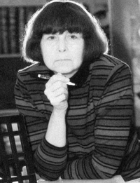

София Губайдулина, композитор
София Асгатовна Губайдулина - российский композитор, с 1991 года живёт в Германии. Автор более 100 симфонических произведений, сочинений для солистов, хора и оркестра, инструментальных ансамблей, музыки для театра, кино и мультфильмов.
С. А. Губайдулина — один из самых крупных и глубоких композиторов второй половины XX века, классик мировой музыки. В ее творчестве чувствуется стремление к органичному объединению свойств искусства Запада и Востока, воздействие представлений духовно-религиозного порядка. Через веру она приходит и к смыслу творчества. "Я религиозный православный человек и религию понимаю буквально, как religio — связь между жизнью и высотой идеальных установок и абсолютных ценностей, постоянное воссоздание legato жизни. Жизнь разрывает человека на части. Он должен восстанавливать свою целостность — это и есть религия. Помимо духовного восстановления нет никакой более серьезной причины для сочинения музыки".
Биография
София Губайдулина родилась родилась 24 октября 1931года в городе Чистополь, Татарская АССР. Отец — Губайдулин Асгат Масгудович, инженер-геодезист. Мать — Губайдулина Федосия Федоровна, урождённая Елхова, педагог. Дед, Масгуд Губайдулин, был муллой. В 1932 году семья переехала в Казань.
В 1935 София поступила в музыкальную школу. С 1946 по 1949 училась в казанской Музыкальной гимназии по фортепиано (класс М. А. Пятницкой) и композиции, а с 1949 по 1954 в Казанской консерватории по классу композиции у Альберта Лемана, а также по классу фортепиано у Григория Когана. В 1954 г. поступила в Московскую консерваторию, класс композиции Юрия Шапорина, а затем Николая Пейко.Не был оставлен и профессиональный контакт с роялем: почти до окончания консерватории продолжались занятия с Я. Заком. Из сочинений этого периода следует отметить вокальный цикл "Фацелия" на слова М. Пришвина (1957), с которого композитор начала отсчет своих произведений. Сталинская стипендиатка.
В 1959 году Губайдулина окончила Московскую консерваторию по классу композиции и в том же году поступила в аспирантуру при Московской консерватории, в класс В. Шебалина. Лейтмотивом ее творческой жизни в этот период стало слово-напутствие, сказанное ей Д. Шостаковичем: "Я вам желаю идти вашим “неправильным” путем". В 1961 году ее принимают в Союз композиторов. В 1962-м проходит первый авторский концерт с исполнением Фортепианного квинтета, "Фацелии" и Чаконы для фортепиано.
София оканчивает аспирантуру в 1963 году у профессора Виссариона Шебалина и избирает судьбу свободного художника. Она целиком погружается в сочинение музыки. Средства к существованию находит благодаря написанию музыки для кино. Всего она оформила около 25 кинолент, включая хорошо известные "Маугли" (мультфильм, 1971) и "Чучело" (режиссер Р. Быков, 1983). В том же 1963 году за "Allegro rustico" для флейты и фортепиано получает 1-ю премию на Всесоюзном конкурсе молодых композиторов.
Важной вехой на творческом пути композитора стало создание "Пяти этюдов для арфы, контрабаса и ударных инструментов" (1965), в которых стала очевидной ее авторская индивидуальность.
Интерес композитора к философии и колориту Востока проявился в кантатах
"Ночь в Мемфисе" на тексты из древнеегипетской лирики и "Рубайят" на
стихи Хакани, Хафиза и Хайяма (1968, 1969). В 1969—1970 Губайдулина работала в Московской экспериментальной студии электронной музыки в музее имени А. Н. Скрябина, где состояла и членом художественного совета. Возглавлял студию Е. Мурзин, работали в ней, в частности, композиторы Э. Денисов, А. Шнитке, теоретик П. Мещанинов. Написала там электронную пьесу Vivente — non vivente (Живое — неживое, 1970). Губайдулина писала также музыку для кино. Всего она написала музыку к 25 фильмам, включая «Вертикаль» (1967), «Маугли» (мультфильм, 1971), «Человек и его птица» (мультфильм, 1975) и «Чучело» (реж. Р. Быков, 1983). Ухудшение общественной, в том числе концертно-музыкальной, обстановки в конце 1960-х и на протяжении 1970-х годов поставило перед многими художниками круга Губайдулиной вопрос о духовном и профессиональном выживании. Спасением для Губайдулиной стала поддержка ее со стороны талантливых отечественных исполнителей, настойчиво включавших ее произведения в свои концертные выступления: С. Яковенко, В. Тонха, Г. Рождественский, Г. Кремер, Ф. Липс, Ю. Николаевский, В. Попов, И. Монигетти, П. Мещанинов, Л. Михайлов, Л. Давыдова, А. Бахчиев, Б. Берман. С начала 1970-х годов подружилась с Петром Мещаниновым (муж с 1992[3]),
пианистом, дирижёром ряда её произведений и теоретиком музыки, оказавшим
значительное влияние на числовые расчёты в технике музыкальной
композиции Губайдулиной. Все это время она очень мало исполнялась,
публиковалась, была известна
только узкому кругу музыкантов, к ней недоброжелательно относился Союз
композиторов, вплоть до слов "такие веточки надо обрубать топором". С
1975 г. выступала с импровизациями в составе ансамбля «Астрея» вместе с
композиторами Виктором Суслиным и Вячеславом Артёмовым. В 1979 году на
VI съезде композиторов в докладе Тихона Хренникова её музыка подверглась
жёсткой критике, и Губайдулина попала в так называемую «хренниковскую
семёрку» — «чёрный список» 7 отечественных композиторов.
Творчеству Губайдулиной присуще, с одной стороны, осмысление через свои произведения глубоких философских концепций, с другой — интенсивное обогащение звучащей музыкальной интонации. Например, в "Ночи в Мемфисе" проявилась дзэн-буддийская идея растворения своего "я" в окружающем мире. В поисках яркой выразительности звука она, пианистка по образованию, постепенно изучила свойства всех других инструментов — струнных, духовых, ударных, органа — и услышала в них новые выразительные возможности. В частности, настоящей школой новейших способов игры на виолончели стали ее "Десять прелюдий" (этюдов) для этого инструмента (постоянный исполнитель в течение десятков лет — В. Тонха). На новых приемах основаны вокальная и инструментальные партии в "Рубайят". Большому обогащению музыкальной фантазии послужило ее участие в импровизационной группе "Астрея", где с 1975 по 1981 год ее партнерами были композиторы В. Артемов и В. Суслин, с 1991-го — отец и сын Суслины.
Редкие же концертные исполнения приносили Губайдулиной огромный успех. Таково было воплощение ее "Часа души" — концерта для солирующих ударных и симфонического оркестра с солирующей певицей на стихи М. Цветаевой в Концертном зале имени Чайковского (1976, исполнялся в Москве — 1981). Возвышение ею роли всевозможных ударных инструментов, в том числе восточных, также отвечало ее поискам новой музыкальной выразительности. Постоянным исполнителем на ударных выступает М. Пекарский.
Новаторские открытия были сделаны Губайдулиной и в звучании баяна, превратившегося в XX веке из народного инструмента в академический. Здесь постоянным сотрудником композитора стал Ф. Липс (позднее за рубежом — Э. Мозер). В 1978 году для баяна соло была написана пьеса "De profundis" ("Из глубины"), ставшая самым исполняемым в мире современным произведением для этого инструмента. Выдающимся по глубине музыкальной мысли и яркости звуковых открытий стало сочинение "Семь слов Христа" для виолончели, баяна и струнных (1982).
При повышенном внимании к содержательности музыкальной интонации для Губайдулиной особое значение имеет исполнитель. Так, концерт для скрипки "Offertorium" ("Жертвоприношение", с идеей смерти и воскресения Христа, 1980/1982/1986) изначально задумывался с мыслью о Г. Кремере, в котором композитор увидела "исполнителя, способного принести жертву Музыке через предельную самоотдачу звучащей струне". С этого сочинения, постоянным исполнителем которого стал Г. Кремер, началась мировая известность автора.
Перелом в судьбе Губайдулиной принесла горбачевская "перестройка": с 1985 года стало меняться ее положение практически запрещенного композитора. Стремительно, в течение нескольких лет, она обретает мировое признание. На Международном фестивале в США 1988 года заголовок в одной из газет гласит: "Запад открывает гений Софии Губайдулиной". Композитор лично присутствует на своих концертах в разных странах. Например, в 1989 году она выезжает в Японию (Токио и Кобе), Лондон, Амстердам, Вену, ее концерты проходят в Нью-Йорке и Луисвилле. В 1990 году состоялся первый фестиваль ее музыки на родине — в Свердловске (ныне Екатеринбург). В том же году она получает немецкую стипендию для пребывания в Ворпсведе. К 60-летию композитора проводится международный фестиваль в Турине (Италия), серии концертов в других странах мира. Тогда же, в 1991 году, она заключает брак с П. Мещаниновым, с которым была дружна много лет. Как теоретик музыки, он оказал значительное влияние на интерес композитора к числовым расчетам в процессе ее сочинения. В 1992 году они поселяются в Германии, в Аппене под Гамбургом, сохранив российское гражданство. По словам Губайдулиной, она нашла возможность осуществить свою давнюю мечту — жить в полной тишине.
За десятилетие 1986—1996 годов Губайдулина создает целую серию сочинений из числа самых крупных и значительных. Симфония "Слышу. Умолкло." в 12 частях (1986), посвященная Г. Рождественскому, далеко уходит от традиций этого жанра. Название символизирует значимость не только звучания, но и молчания, паузирования. В связи с посвящением дирижеру смысловым центром произведения становится уникальное соло дирижера, состоящее из одних только жестов, при молчании оркестра. Монументальное произведение философично и выдержано в параллельной драматургии двух смысловых линий: статического мажора (как бы вечного света) и трагических усилий человека, заканчивающихся крушением. Согласно экзистенциалистской позиции автора, концепция не приводит к итоговому утверждению, а оставляет неразрешенный вопрос.
"Аллилуйя" для хора, оркестра, органа, солиста-дисканта и цветовых проекторов (1990) по строгости и чистоте эмоционального тона может быть сравнена с иконой. Через "гамму цветов" проводится символика "жертвования света" в следовании от светлых к темным краскам. Замысел произведения связан с идеей евхаристии — соборным жертвованием и последующим воскресением. Финал окрашен светлым пением мальчика-дисканта на подлинную древнерусскую мелодию и текст "Да исполнятся уста".
В 1991 году Губайдулина получила немецкую стипендию и полтора года
находилась в Ворпсведе. С 1992 года живет в Аппене под Гамбургом,
сохраняя российское гражданство.
"Из Часослова" для виолончели, оркестра, мужского хора и чтеца (1991) — произведение на стихи из книги "О монашеской жизни" Р. М. Рильке, где главным героем выступает исповедующийся Богу русский монах (с ним идентифицируется солирующая виолончель). В соответствии с образом темноты как божественной тайны у Рильке в музыке Губайдулиной большую роль играет низкий регистр: виолончель соло, мужской хор, сверхнизкая звучность у отдельных инструментов.
Как одно из наиболее исполняемых выделилось произведение типа кантаты — "Теперь всегда снега" для камерного хора и камерного ансамбля в 5 частях на стихи Г. Айги (1993). Губайдулину в этом поэте привлекает глубина поэзии, емкость метафор и огромное значение близких ей самой художественных элементов — пауз и ритма. На его стихи ранее был написан вокальный цикл "Розы" (1972), стихотворение "И празднество в разгаре" повлияло на создание инструментального произведения для виолончели с оркестром того же названия (1993). Для музыкального языка "Снегов" характерны разнообразные приемы вокальной экспрессии и стереофония: в хоровых партиях применены пение с примесью дыхания, шепот, речь и т.д., певцы по ходу исполнения перемещаются по залу, создавая разнообразные пространственные эффекты. В центральной части цикла возникает аллюзия очищающей снежной бури. Окружающие части ("Запись: APOPHATIC") контрастно ее оттеняют апофатическим представлением невидимости Бога. Финал же приносит катарсис, через детски чистый образ — "была как лужайка страна.". Композиция кантаты относится к самым строго организованным в творчестве композитора (используются числовые ряды Фибоначчи, Люка и производные от них).
Самым большим вокальным циклом Губайдулиной стали "Висельные песни" (15 песен) на стихи К. Моргенштерна для голоса и ансамбля инструментов (контрабас, ударные и др., 1996). Он единственный у этого автора по соединению серьезной экспрессии музыки с детски сюрреалистическими сюжетами текстов — о полуночной мыши, эстетствующей ласке, одиноко гуляющем колене, исповедующемся червяке, лунной овце. Абсурдистскую кульминацию составляет чисто жестовая, беззвучная "Ночная песнь рыбы".
Концерт для альта с оркестром (1996) по заказу Чикагского симфонического оркестра, посвященный Ю. Башмету, написан автором свободно, без числовых расчетов. Сумрачный и значительный, он обладает четкой драматургией контрастов: как бы импровизационному полету солирующего альта противопоставлено монолитное "говорение" струнных, бесплотности флажолетов струнных — мрачные голоса вагнеровских туб в низком регистре. На фестивале в честь 70-летия композитора в 2001 году концерт прозвучал в зале церковных соборов храма Христа Спасителя в Москве в исполнении Ю. Башмета под управлением В. Гергиева.
Непрерывные поиски выразительности звука привели Губайдулину к освоению четвертитоновых музыкальных интервалов. Особая звуковая аура возникла в ее "Музыке для флейты, струнных и ударных" (1994), "Кватернионе" для четырех виолончелей (1996), где половина струнных настраивалась на 1/4 тона ниже. Новые возможности открылись композитору при освоении японского кото благодаря знакомству с К. Саваи ("В тени под деревом", 1998).
Фестивали с музыкой Губайдулиной стали периодическими, что свидетельствовало о ее признании как классика мировой музыки: 1993, 1995, 1996 — в России, 1995 — в Париже и Локенхаузе, 1998 — в Дорнахе и Авиньоне. Самым значительным празднеством стал фестиваль в 2001 году в Москве и Казани, где открыт Центр современной музыки имени С. А. Губайдулиной (2001/2002).
На грани тысячелетий Губайдулиной был сделан заказ из Штутгарта на евангельское сочинение, каким стали монументальные "Страсти по Иоанну" для солистов, двух смешанных хоров, органа и оркестра (2000). Музыка здесь подчинена слову, данному в Евангелии от Иоанна, в замысле произведения — скрещение проблем веры и судеб мира. Тексты из Евангелия от Иоанна переплетены со строками из Откровения Иоанна Богослова (Апокалипсиса), что приводит к концепции "страшного катарсиса": смерти Христа и пролитию семи чаш гнева. В свои "Страсти" Губайдулина вложила великую тревогу за человечество: "Все страшные, последние вопросы “Страстей” не должны быть отодвинуты. Такое отодвигание в сторону — неправда. Они, эти вопросы, настолько велики, что не могут быть и морально преодолены; такое моральное преодоление — иллюзия. Тем более не могут эти вопросы быть “сняты”: “снять” такое — значит взять грех на душу". Окончанием "Страстей" стала "Пасха по Иоанну" для того же состава исполнителей (2001).
В первые годы нового столетия и тысячелетия композитор продолжала поиски новой выразительности звука ("У края пропасти" для 7 виолончелей и 2 аквафонов, 2002) и развивала линию размышлений о мире: "Свет конца" для оркестра (2002), "Под знаком Скорпиона" (концерт для баяна с оркестром, 2003), триптих "Путь к моей дочери" (2005—2006) — "Лира Орфея" для скрипки, струнного оркестра и ударных, "Меж ликом надежды и ликом отчаяния" из "Пепельной среды" Т. С. Элиота для флейты и оркестра, "Пир во время чумы" для оркестра.
В 2005 году провела мировое турне, посвящённое Тысячелетию Казани.
В 2011 году в Казани прошли торжества и акции в честь 80-летия
Губайдуллиной, в том числе два фестиваля её имени и объявление её
почетным гражданином Казани.
Международный фестиваль современной музыки «Конкордия» имени Софии Губайдулиной
В 2011 году с личным патронажем и участием Софии Губайдулиной в Казани силами Государственного симфонического оркестра Республики Татарстан основан ежегодный фестиваль современной музыки её имени «CONCORDIA», в котором выступают известные российские и зарубежные композиторы и исполнители. Художественный руководитель фестиваля — заслуженный артист России Александр Сладковский.
Международный конкурс пианистов имени Софии Губайдулиной
В Казани проводится международный конкурс пианистов её имени с участием студентов Казанской и других консерваторий.
Центр современной музыки
Центр современной музыки действует в Казани в реконструированном доме на улице Тельмана, где композитор провела свои детские годы. Философские представления Губайдулиной о творчестве и свободе личности близки позиции Н.Бердяева, утверждавшего, что «творчество продолжает дело творения». «Свобода, — считает С. Губайдулина, — это возможность сполна реализовать свою сущность, прислушаться к себе, к тому, что личности дано в ситуации истории. Как скрипачу, пианисту, чтобы иметь хороший звук, надо иметь свободные руки, так композитору или писателю надо иметь совершенно свободную душу». XX в. как исторический этап С. Губайдулина воспринимает в духе философии экзистенциализма (по ее словам, «и праведники не спасутся»), когда правда времени выявляется в виде вопросов и сомнений, но никак не утверждений. «Есть большое отличие нашего времени от предыдущих веков. Возьмем античное аполлоническое искусство. Оно создало скульптуры богов, веря, что такой бог заключает в себе истину. Иное представляет собой сознание фаустианского (гётевского) типа и времени. Оно видит скульптуру, но не считает ее истиной, в нем живет тоска по иному образу. Наш XX век мне представляется переходным, скорее веком сеятелей, после которого придут пожинатели. Мы не уверены, что сможем дойти до конечной истины. Поэтому у нас — другое сознание и другой материал». Истиной XX в. С. Губайдулина считает и органичный синтез культур Запада и Востока — в философии и художественном языке. Происходящая из русско-татарской семьи, она изначально чувствовала в себе призвание к этому синтезу. В плане философских идей — это синтез дуализма Запада и монизма Востока. В частности, таким путем С. Губайдулина решила мировоззренческую проблему финала а ряде своих сочинений: в кантате «Ночь в Мемфисе», в «Часе души» для солирующих ударника и певицы с оркестром после типично западного столкновения антитез наступает как бы даосское растворение всех контрастов. В плане художественного языка — это синтез западной музыкальной темперации и точечного звука с восточной не-темперированностью и зонным звуком, соединение западных музыкальных жанров и инструментов с восточными, элементов западного авангарда с восточными традициями. Например, в пьесе «Юбиляция» для ударных инструментов название относится к католической литургии, а исполнительский состав обогащается традиционными китайскими барабанами (гангу, тагу, яогу, баньгу.) С тяготением к древности и первозданности связана еще одна установка композитора — избегать затвердевших культурных наслоений, искать некие пра-состояния духа. «Стиль заставляет себя же повторять, это накладывает на человека некие оковы... Я предпочитаю состояние «прахудожника», докультурного состояния художника». Отсюда — культивируемая практика импровизации на незнакомых восточных и народных инструментах (группа «Астрея», совместно с Вяч. Артемовым и В.Суслиным). Стремление снять все слои культурной традиции повело и к нетрадиционной трактовке таких основополагающих академических музыкальных жанров, как симфония, квартет. Так, в симфонии «Слышу... Умолкло...» — не 4, а 12 частей, неклассичны контрасты, исходящие из параллельной драматургии, уникально центральное соло — не какого-либо инструмента, а дирижера, делающего беззвучные взмахи рук. В отношении музыкального языка как новейшую тенденцию второй половины XX в. Г. рассматривает сонорику, с ее самостоятельностью музыкальной краски, которая требует неклассической логики в функционировании музыкальных средств. В художественном языке самой С. Губайдулиной сложился новый, самостоятельный параметр — «параметр экспрессии» и «диссонансов» нового вида, опирающихся на контрасты в артикуляции музыкального звука (легато — стаккато, также игра смычком — игра пиццикато), фактуре (непрерывность — прерывистость) и т. д. Например, ее 3-й квартет состоит из двух разделов, где первый исполняется пиццикато («диссонанс экспрессии»), а второй — смычками легато («консонанс экспрессии»). Фундаментальную основу композиции у С. Губайдулиной составляет ритмическая организация, в которой она компонует не только звучание, но и паузирование, молчание, о чем говорят даже названия произведений: симфония «Слышу... Умолкло...», «Anasihoketus» (или «Как бы гокет»; гокет — жанр с прерывистым звучанием голосов). Для организации своей ритмики Г. весьма часто использует ряд Фибоначчи (1,1,2,3,5,8,13,21,34 и т. д.), основывая на его пропорциях и краткие музыкальные мотивы, и крупные музыкальные формы. Одна из излюбленных мыслей С. Губайдулиной — об общности целей у религии и музыки. «Я религиозный православный человек и религию понимаю буквально, как re-ligio, восстановление связи, восстановление legato жизни. Жизнь разрывает человека на части. Он должен восстанавливать свою целостность — это и есть религия. Помимо духовного восстановления нет никакой более серьезной причины для сочинения музыки».
В. Холопова о творчестве С. Губайдулиной:
С. Губайдулина принадлежит к числу наиболее значительных советских композиторов второй половины XX в. Ее музыке свойственна большая эмоциональная сила, крупная линия развития и вместе с тем тончайшее ощущение выразительности звука - характера его тембра, исполнительского приема.
Одна из важных задач, которую ставит перед собой С. А. Губайдулина, - синтезировать черты культуры Запада и Востока. Этому способствует и ее происхождение из русско-татарской семьи, жизнь сначала в Татарии, потом в Москве. Не принадлежа ни к "авангардизму", ни к "минимализму", ни к "новой фольклорной волне" или какому-либо иному современному течению, она обладает ярким собственным индивидуальным стилем.
Губайдулина - автор многих десятков сочинений в разных жанрах. Через все ее творчество проходят вокальные опусы: ранняя "Фацелия" по поэме М. Пришвина (1956); кантаты "Ночь в Мемфисе" (1968) и "Рубайят" (1969) на стихи восточных поэтов; оратория "Laudatio pacis" (на ст. Я. Коменского, в соавт. с М. Копелентом и П. X. Дитрихом - 1975); "Perception" для солистов и ансамбля струнных (1983); "Посвящение Марине Цветаевой" для хора a cappella (1984) и др.
Наиболее обширна группа камерных сочинений: Соната для фортепиано (1965); Пять этюдов для арфы, контрабаса и ударных (1965); "Concordanza" для ансамбля инструментов (1971); 3 струнных квартета (1971, 1987, 1987); "Музыка для клавесина и ударных инструментов из коллекции Марка Пекарского" (1972); "Detto-II" для виолончели и 13 инструментов (1972); Десять этюдов (прелюдий) для виолончели solo (1974); Концерт для фагота и низких струнных (1975); "Светлое и темное" для органа (1976); "Detto-I" - Соната для органа и ударных (1978); "De prolundis" для баяна (1978), "Юбиляция" для четырех ударников (1979), "In croce" для виолончели и органа (1979); "В начале был ритм" для 7 ударников (1984); "Quasi hoketus" для фортепиано, альта и фагота (1984) и др.
К области симфонических произведений Губайдулиной относятся "Ступени" для оркестра (1972); "Час души" для солирующих ударных, меццо-сопрано и симфонического оркестра на ст. Марины Цветаевой (1976); Концерт для двух оркестров, эстрадного и симфонического (1976); концерты для фортепиано (1978) и скрипки с оркестром (1980); Симфония "Stimmen... Verftummen..." ("Слышу... Умолкло..." - 1986) и др. Одно сочинение - чисто электронное, "Vivente - non vivante" (1970). Значительна музыка Губайдулиной для кино: "Маугли", "Балаган" (мультфильмы), "Вертикаль", "Кафедра", "Смерч", "Чучело" и др. Губайдулина в 1954 г. окончила Казанскую консерваторию как пианистка (у Г. Когана), занималась факультативно по композиции у А. Лемана. Как композитор окончила Московскую консерваторию (1959, у Н. Пейко) и аспирантуру (1963, у В. Шебалина). Желая посвятить себя только творчеству, она на всю жизнь избрала путь свободного художника.
Творчество Губайдулиной было сравнительно мало известно в период "застоя", и только перестройка принесла ему широкое признание. Произведения советского мастера получили высочайшую оценку и за рубежом. Так, во время Бостонского фестиваля советской музыки (1988) одна из статей была озаглавлена: "Запад открывает гений Софии Губайдулиной".
Среди исполнителей музыки Губайдулиной - известнейшие музыканты: дирижер Г. Рождественский, скрипач Г. Кремер, виолончелисты В. Тонха и И. Монигетти, фаготист В. Попов, баянист Ф. Липе, ударник М. Пекарский и др.
Индивидуальный композиторский стиль Губайдулиной сложился в середине 60-х гг., начиная с Пяти этюдов для арфы, контрабаса и ударных, наполненных одухотворенным звучанием нетрадиционного ансамбля инструментов. Затем последовали 2 кантаты, тематически обращенные к Востоку, - "Ночь в Мемфисе" (на тексты из древнеегипетской лирики в переводе А. Ахматовой и В. Потаповой) и "Рубайят" (на стихи Хакани, Хафиза, Хайяма). Обе кантаты раскрывают вечные человеческие темы любви, скорби, одиночества, утешения. В музыке осуществлен синтез элементов восточной мелизматической мелодии с западной действенной драматургией, с додекафонной техникой сочинения.
В 70-е гг., не увлекшись ни стилем "новой простоты", широко распространившимся в Европе, ни методом полистилистики, которым активно пользовались ведущие композиторы ее поколения (А. Шнитке, Р. Щедрин и др.), - Губайдулина продолжала поиск в области звуковой выразительности (например, в Десяти этюдах для виолончели) и музыкальной драматургии. Концерт для фагота и низких струнных представляет собой острый "театральный" диалог "героя" (солирующего фагота) и "толпы" (группы виолончелей и контрабасов). При этом показан их конфликт, который проходит различные этапы взаимного непонимания: навязывание "толпой" своей позиции "герою" - внутренняя борьба "героя" - его "уступки толпе" и моральное фиаско главного "персонажа".
"Час души" для солирующих ударных, меццо-сопрано и оркестра содержит противопоставление человеческого, лирического и агрессивного, бесчеловечного начал; итогом служит вдохновенный лирический вокальный финал на возвышенные, "атлантские" стихи М. Цветаевой. В произведениях Губайдулиной появилось и символическое толкование исходных контрастных пар: "Светлое и темное" для органа, "Vivente - non vivente". ("Живое - неживое") для электронного синтезатора, "In croce" ("Крест накрест") для виолончели и органа (2 инструмента в ходе развития обмениваются своими темами).
В 80-х гг. Губайдулина снова создает и произведения крупного, масштабного плана, и продолжает излюбленную "восточную" тему, и усиливает внимание к вокальной музыке.
Утонченным восточным колоритом наделяется ею "Сад радости и печали" для флейты, альта и арфы. В этом сочинении прихотлива тонкая мелизматика мелодии, изысканно сплетение инструментов высокого регистра.
Концерт для скрипки с оркестром, названный автором "Offertorium", музыкальными средствами воплощает идею жертвования и возрождения к новой жизни. В качестве музыкального символа выступает тема из "Музыкального приношения" И. С. Баха в оркестровой обработке А. Веберна. Третий струнный квартет (одночастный) отступает от традиции классического квартета, он основан на контрасте "рукотворной" игры pizzicato и "нерукотворной" игры смычком, чему также придано символическое значение.
Одним из лучших своих произведений Губайдулина считает "Perception" ("Восприятие") для сопрано, баритона и 7 струнных инструментов в 13 частях. Возникло оно как результат переписки с Ф. Танцером, когда поэт присылал тексты своих стихотворений, а композитор давала на них и словесные, и музыкальные ответы. Так возник символический диалог Мужчины и Женщины на темы: Творец, Творение, Творчество, Тварь. Губайдулина добивалась здесь повышенной, проникающей выразительности вокальной партии и применила вместо обычного пения целую шкалу голосовых приемов: чистое пение, пение с придыханием, Sprechstimme, чистая речь, речь с придыханием, интонированная речь, шепот. В отдельных номерах добавлена магнитная пленка с записью участников исполнения. Лирико-философский диалог Мужчины и Женщины, пройдя этапы его воплощения в ряде номеров (№ 1 "Взгляд", № 2 "Мы", № 9 "Я", № 10 "Я и Ты"), приходит к своей кульминации в № 12 "Смерть Монти". Эта наиболее драматическая часть - баллада о черном коне Монти, который когда-то брал призы на скачках, а теперь предан, продан, забит, мертв. № 13 "Голоса" служит рассеивающим послесловием. Начальное и конечное слова финала - "Stimmen... Verstummen..." ("Голоса... Умолкло...") послужили подзаголовком к крупной, двенадцатичастной Первой симфонии Губайдулиной, продолжившей художественные идеи "Perception".
Путь Губайдулиной в искусстве может быть обозначен словами из ее кантаты "Ночь в Мемфисе": "Свершай дела свои на земле по велению своего сердца".
В. Холопова
Избранные сочинения
Фацелия, вокальный цикл на слова М. Пришвина (1957)
Пять этюдов для арфы, контрабаса и ударных инструментов (1965)
Ночь в Мемфисе, кантата для меццо-сопрано, мужского хора и оркестра на древнеегипетские тексты (1968)
Рубайят, кантата на стихи Хакани, Хафиза и Хайяма (1969)
De profundis (Из глубины), пьеса для баяна соло (1978), впервые исполнена Ф. Липсом
Семь слов Христа для виолончели, баяна и струнных (1982)
Offertorium (Жертвоприношение), концерт для скрипки с оркестром (1980/1982/1986)
Et exspecto (В ожидании), соната для баяна в 5 частях, посвящение Ф. Липсу (1986)
Слышу… Умолкло…, симфония в 12 частях под названием (1986)
Аллилуйя для хора, оркестра, органа, солиста-дисканта и цветных проекторов, 1990
Из Часослова, кантата на стихи Райнера Марии Рильке, (1991)
Теперь всегда снега, кантата на стихи Геннадия Айги (1993)
Музыка для флейты, струнных и ударных (1994)
Симфония Фигуры времени (1994)
Висельные песни (15 песен) на стихи К. Моргенштерна для голоса и ансамбля инструментов (контрабас, ударные и др., 1996).
Ночная песнь рыбы, концерт для альта с оркестром (1996), по заказу Чикагского симфонического оркестра, посвященный Ю. Башмету
Кватернион для четырёх виолончелей (1996)
Страсти по Иоанну, для солистов, хора и оркестра, написанная по заказу города Штутгарта в ознаменование 250-летия со дня смерти И. С. Баха (2000).
Пасха по Иоанну, для солистов, хора и оркестра, (2001).
«In Tempus Praesens», Второй концерт для скрипки с оркестром, (2007).
Награды и признание
Премия князя Монако (1987),
Заслуженный деятель искусств РСФСР (1989),
Член Комитета по присуждению Ленинских премий (1990)[5],
премия имени Кусевицких, США (1990, 1994),
премия Франко Аббиато, Италия (1991),
премия на 7-м Международном фестивале композиторов-женщин в Гейдельберге (1992),
Государственная премия России (1992),
премия имени Людвига Шпора, Германия (1995),
Императорская Премия (Praemium Imperiale), Япония (1998),
член ордена «Pour le Mérite» («За заслуги») ФРГ (1999),
премия фонда "Библия и культура", Германия (1999),
музыкальная премия Леони Соннинг, Дания (1999),
Большой Крест ордена «Pour le Mérite»(«За заслуги») ФРГ (2002),
медаль Гёте, Германия (2001),
премия „Silenzio“, Москва (2001),
«Polar Music Prize» (Премия Polar Music), Стокгольм (2002),
«Орден «За заслуги перед Федеративной Республикой Германия»», Германия (2002),
«Living Composer», Франция (2003),
премия «Триумф» (2006),
Почётная награда Правительства Москвы и Международного Совета российских соотечественников "Соотечественник года – 2007»,
Почётный доктор Йельского университета (2009),
Почётный доктор Чикагского университета (2011),
Почётный гражданин Казани (2011)
|